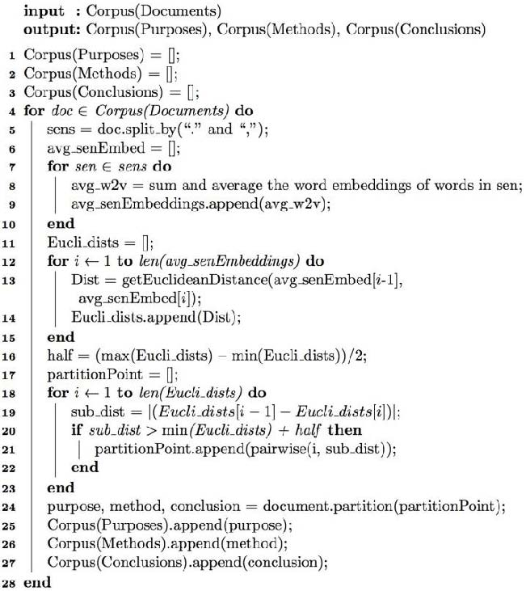

This is a web copy of https://doi.org/10.1145/3184558.3191629 originally published by ACM Press, redistributed under the terms of Creative Commons Attribution 4.0 (CC BY 4.0). The modifications from the original are solely to improve HTML aiming to make it Findable, Accessible, Interoperable and Reusable. augmenting HTML metadata and avoiding ACM trademark. To reference this HTML version, use:
Permalink: https://w3id.org/oa/10.1145/3184558.3191629
DOI: https://doi.org/10.1145/3184558.3191629
WWW '18: Proceedings of The Web Conference 2018, Lyon,
France, April 2018
Clustering narrow-domain short texts, such as academic abstracts, is an extremely difficult clustering problem. Firstly, short texts lead to low frequency and sparseness of words, making clustering results highly unstable and inaccurate; Secondly, narrow domain leads to great overlapping of insignificant words and makes it hard to distinguish between sub-domains, or fine-grained clusters. The vocabulary size is also too small to construct a good word bag needed by traditional clustering algorithms like LDA to give a meaningful topic distribution. A novel clustering model, Partitioned Word2Vec-LDA (PW-LDA), is proposed in this paper to tackle the described problems. Since the purpose sentences of an abstract contain crucial information about the topic of the paper, we firstly implement a novel algorithm to extract them from the abstracts according to its structural features. Then high-frequency words are removed from those purpose sentences to get a purified-purpose corpus and LDA and Word2Vec models are trained. After combining the results of both models, we can cluster the abstracts more precisely. Our model uses abstract text instead of keywords to cluster because keywords may be ambiguous and cause unsatisfied clustering results shown by previous work. Experimental results show that the clustering results of PW-LDA are much more accurate and stable than state-of-the-art techniques.
ACM Reference
Format:
Changzhou Li1, Yao Lu, Junfeng Wu, Yongrui Zhang,
Zhongzhou Xia, Tianchen Wang, Dantian Yu, Xurui Chen,
Peidong Liu and Junyu Guo. 2018. LDA Meets Word2Vec: A
Novel Model for Academic Abstract Clustering. In
Proceedings of The 2018 Web Conference Companion (WWW
'18 Companion). ACM, New York, NY, USA, 12 pages.
https://doi.org/10.1145/3184558.3191629
Text clustering among academic papers is a useful approach in text data mining. It helps researchers to explore information based on the text clusters [1]. Clustering algorithms applied to multi-domain document collections are various and widely used [2]. However, clustering of narrow-domain texts such as texts that are all about computer science or all about medicine has not been studied well although it plays a significant role in scientific research. Thus, recently researchers have put more focus on it [3,4,5].
Considering the fact that free access to full-text academic papers is not always available and the high dimension of full-text data, it is not practical to use the full-text data for clustering. Traditional keyword-based approach for clustering documents gives unstable and imprecise results [6]. And it fails on narrow-domain clustering, or fine-grained clustering. Actually, keywords of papers from the same domain overlap greatly and contribute little to differentiate fine-grained topics. Alexandrov et al. [5,6] suggested to cluster abstracts, which contain more information about the topics than keywords.
As a kind of short texts, abstracts face the problem of sparsity when being clustered. To solve this problem, different methods have been proposed [8,9,10,11]. One of the most popular methods is Latent Dirichlet Allocation(LDA) model, in which a single topic is defined as a probability distribution over words, so that each document can be viewed as a mixture of various topics. Each word is generated by a specific topic individually in LDA model, and the corresponding topic is drawn from its associated proportion distribution [12]. LDA has the advantage of reducing the dimension of text data. Based on the external Wikipedia corpus, Phanetal et al. [13] proposed to use LDA to discover hidden topics and expand short texts. In [14], K-means clustering algorithms is enhanced based on LDA model. Onan et al. [15] came up with an improved ant algorithm with LDA-based representation for text document clustering. However, those models that have a good result in other types of short texts often give very unstable or imprecise results when clustering abstracts of academic papers, technical reports, patents and so on [7]. Although LDA excels at extracting the lateral topic information out of the text internally, its low-dimensional characteristic weakens the ability to differentiate the texts [16]. For instance, Alexandrov et al. [7] admitted that abstracts cannot be clustered with the same quality as full texts in their experiment.
Since we are dealing with document collections containing documents from one narrow domain and the size of an abstract is small, the intersection of text information is strong and it can greatly weaken the clustering results [7]. To avoid the negative effect, it is critical to extract key information from an abstract. Generally speaking, the abstracts of academic papers usually contain three important elements of a research: the purpose, the new method, and the results or conclusions. Based on this observation, we propose Partition Word2Vec-LDA (PW-LDA) model, a novel fine-grained text clustering model for abstracts.
Instead of using the entire abstract, we extract the purpose sentences from the abstract, followed by other information extraction steps. Next, LDA and Word2Vec are utilized together to obtain embeddings which represents sentences and topics respectively. Word2Vec, proposed by Mikolov et al. [17], takes surrounding words around a certain word into consideration and it is efficient and accurate in tasks related to the measurement of word similarity. A hybrid approach in [18] combines Word2Vec and LDA to extract features from documents with bag-of-distances in a semantic space. It not only connects the relationship between documents and topics, but also integrates the contextual relationships among words, which leads to a good classification performance. Inspired by this idea, we propose the topic embeddings and the sentence embeddings and use them to measure the similarity between different topics and documents.
The main contribution of our work is that we propose PW-LDA, a novel fine-grained text clustering model for abstracts. It can be summarized as follows: (1) We develop a method to extract purpose sentences that are the key information in the abstract used for clustering. (2) We propose a novel model combining LDA and Word2Vec to get a good result in fine-grained text clustering of abstracts. The rest of the paper is organized as follows. In Section 2, we will describe the framework of our model. Section 3 provides details about experiments which compare our model with other relevant methods. Conclusions are presented in Section 4.
2.1.1 LDA (Latent Dirichlet Allocation). LDA is a popular generative probabilistic topic model, where each document is represented as a random mixture of latent topics and each topic is represented as a distribution over fixed set of words [12]. In LDA, each document can exhibit multiple topics with different degrees. The words in each document are the observed data, according to which, the main objective is to infer the underlying latent topic structure. For each document in the corpus, the words are generated with a two-staged procedure. First, a distribution over topics is randomly chosen. Then, for each word of the document, a topic from the distribution over topics is randomly chosen and a word from the particular distribution is randomly chosen. LDA can be modelled as a three-level Bayesian graphical model. This graphical model of LDA is presented in Fig. 1 . In Fig. 1, nodes are random variables and edges represent possible dependencies between the variables. In this representation, ${\rm{\alpha }}$ and ${\rm{\beta }}$ denotes the Dirichlet parameter, ${\rm{\theta }}$ denotes document-level topic variables, ${\rm{z}}$ denotes per-word topic assignment, ${\rm{w}}$ denotes the observed word. As the three-layered representation in Fig. 1 shows, ${\rm{\alpha }}$ and ${\rm{\beta }}$ parameters depend on number of topics and vocabulary size [12], document-level topic variables are sampled for each document and word-level variables are sampled for each word of the document. In LDA, a word is a discrete data from a vocabulary indexed as $1, \ldots ,V$ . A document is a sequence of N words ${\rm{w}} = ( {{w_1},{w_2}, \ldots ,{w_N}} )$ . A corpus consists of M documents and represented as ${\rm{D}} = ( {{D_1},{D_2}, \ldots ,{D_M}} )$ .
The joint probability of LDA is
In the parameter solving process, ${\rm{w}}$ denotes observation variables, ${\rm{\theta }}$ and $z$ denote hidden variables. By applying EM algorithm, $\alpha $ and $\beta $ are learned.
2.1.2 Word2Vec. The word embedding model uses the idea of neural network to train the language model and treats each word as a vector. The model assumes that each word's appearance only relates to a limited number of words before it, focusing on the sequential combination of words. By using tanh as the activation function, the joint probabilities of sequences are calculated from the sequence of word vectors, and neural network is used to optimize the model and coefficients.
$C( w )$ represents the word vector corresponding to a certain word, and $C$ is an $| V |*m$ matrix, where $| V |$ is the size of the vocabulary and ${\rm{m}}$ is the dimension of the word vector.
The first layer (input layer) of the network is a vector, denoted by $x$ , is formed by $n - 1$ vectors $C( {{w_{t - n + 1}}} ),{\rm{\;\;}} \ldots ,{\rm{\;}}C( {{w_{t - 2}}} ),{\rm{\;\;}}C( {{w_{t - 1}}} )$ . The second layer (hidden layer) of the network is calculated using $d + Hx$ . $d$ is the bias term, after which tanh is used as the activation function. The third layer (output layer) of the network has a total of $| V |$ nodes, and each node $({y_i})$ represents the unnormalized probability of the $i - 1$ th word. Finally, the output value is normalized to the rate by using the Softmax function.
The framework of the proposed model PW-LDA will be introduced in this section. Given a dataset of abstracts from academic papers in the same narrow domain, our goal is to cluster the dataset into a fine-grained cluster ${\rm{C}}$ .
2.2.1 Challenges & Solutions. Two major challenges can be overcome by our model:
1. Short texts:
● LDA+Word2Vec helps reduce the sparsity of short texts.
LDA is traditionally used for document topic clustering. It defines global hierarchical relationships between words, documents and topics. However, we cannot get a good “document-topic distribution” from LDA due to the sparsity of abstracts and low frequencies of terms, thus leading to a bad clustering result.
We also refuse to use keywords in clustering because generally only 10% or 20% of the keywords from the complete keyword list occur in every document and their absolute frequency usually is one or two. In this case, changing a keyword frequency by one can significantly change the clustering results [5,7,3]. Instead of clustering, keywords are usually used in classification problems where exact matches are needed. However, it is clustering that is mostly used in recommendation system rather than classification. When clustering academic papers into different topics using PW-LDA, we take many factors into consideration: the probability distribution of words for different topics, semantics of context and syntax. As a result, a reader may be able to find more overall related papers for the latent topic he or she is searching for.
Word2Vec is a word embedding model to predict a target word from its surrounding contextual words. In Word2Vec, semantically similar words are mapped to nearby points in a continuous vector space and order of words is taken into consideration as well.
To solve this problem, we get inspiration from [18] and combines LDA with Word2Vec in our new model PW-LDA.
2. Narrow domain:
● Purpose sentences extraction method, high-frequency words removal and LDA+Word2Vec all help enhance the capability of discrimination and predication for narrow-domain texts clustering.
We notice that the structure of an abstract from scientific academic paper can usually be partitioned into three parts: “purpose”, “method”, and “conclusion”. The “purpose” part mostly appears at the beginning of an abstract and explains research background, research questions and purpose. The following information is usually outlined [19]:
Therefore, purpose sentences are most relevant to the topic of a scientific paper. we introduce Text Partition Algorithm (see Algorithm 1) to partition abstracts into three parts. A purified-purpose corpus is obtained by removing high frequency words from purpose sentences corpus. This step is important for achieving a higher accuracy of clustering. As we mentioned in the abstract, narrow domain leads to great overlapping of insignificant words and makes it hard to distinguish between sub-domains. For example, words like “factor”, “characteristic”, “control”, “measure” all appear frequently in our purpose corpus. These words are not removed in previous preprocessing step because they are not seen as common stopwords. However, when the clustering domain becomes narrower, these high frequency words will appear in many subdomains and have substantial negative effects on fine-grained clustering.
|  |
Therefore, now they should be treated as new “stopwords” and be removed. See Fig.3 for illustration of this.
A comparison experiment on training Word2Vec model using different corpus is shown in Fig.8. It shows that purpose corpus with high-frequency words removed has the highest accuracy.
2.2.2 General Framework. With LDA+Word2Vec, we can project words, document and topic in a semantic vector space and use word embeddings (Word2Vec) to build document embeddings (Doc2Vec) and topic embeddings (Top2Vec), meanwhile having the flexibility to choose different forms of vector transformation (weighted or unweighted vectors) based on our specific needs.
Two major changes are made to the method used in [18] to obtain document and topic vectors: 1. Replacing the original corpus with our purified-purpose corpus. 2. Replacing Euclidean distance with cosine distance.
As described in [18], given a set of documents ${\rm{D}} = \{ {{\rm{d}}_1},{{\rm{d}}_2}, \ldots ,{{\rm{d}}_{\rm{n}}}\} $ , words that still remain in purified-purpose corpus for every corresponding document constitute a new set ${\rm{P}} = \{ {{\rm{p}}_1},{{\rm{p}}_2}, \ldots ,{{\rm{p}}_{\rm{n}}}\} $ , whose vocabulary is built with ${\rm{N}}$ words: ${\rm{W}} = \{ {{\rm{w}}_1},{{\rm{w}}_2}, \ldots ,{{\rm{w}}_{\rm{N}}}\} $ . By training ${\rm{P}}$ , LDA outputs ${\rm{T\;}}$ latent topics $\{ {{{\rm{t}}_1},{{\rm{t}}_2}, \ldots ,{{\rm{t}}_{\rm{T}}}} \}$ . We rank the probabilities of words from the highest to the lowest for each topic and denote the ${{\rm{j}}^{{\rm{th}}}}$ word in topic ${{\rm{t}}_{\rm{i}}}$ as ${{\rm{\theta }}_{{{\rm{i}}_{\rm{j}}}}}$ . Word2Vec trains ${\rm{P}}$ and vectorizes each word in vocabulary ${\rm{W}}$ into a fixed size (dimension) vector $\{ {{\rm{v}}( {{{\rm{w}}_1}} ),{\rm{v}}( {{{\rm{w}}_2}} ), \ldots ,{\rm{v}}( {{{\rm{w}}_{\rm{N}}}} )} \}$ . To generate topic vector ${\rm{v}}( {{{\rm{t}}_{\rm{i}}}} )$ , ${\rm{h}}$ highest-probability words in ${{\rm{t}}_{\rm{i}}}$ are selected and its probabilities are rescaled as weights in $( 3 )$ . In $( 4 )$ , the topic vector is a weighted sum of ${\rm{these\;h}}$ word vectors.
In (5), document vector is calculated by firstly summing the vectors of words in ${{\rm{p}}_{\rm{i}}}$ to get the “centroid” of all words in document ${\rm{i}}$ . Since documents have different length, we then divide the previous vector by the number of words ${{\rm{c}}_{\rm{i}}}{\rm{\;}}$ in ${{\rm{p}}_{\rm{i}}}$ to scale the measurement at the same level.
Cosine distance in semantic vector space measures cosine similarity between document and topics. In (6), for a single document, we calculate distances from it to all latent topics and choose the topic with the smallest cosine distance to be the topic of this document.
2.2.3 Specific Steps. A flowchart of PW-LDA is shown in Fig. 4 and the specific steps are as following:
Step 1 : From Wan Fang Med Database1, choose 10 different topics (set ${\rm{T}} = 10$ ) and sample 300 papers for each topic to get 3000 documents as dataset ${\rm{X}}$ .
Step 2 : Preprocess the dataset ${\rm{X}}$ to get the preprocessed corpus and train Word2Vec model A to get the word embeddings.
Preprocessing involves the following:
Step 3 : Partition the preprocessed corpus from Step 2 into purpose corpus, method corpus and conclusion corpus by Algorithm 1. (A sentence embedding is represented by averaging the embeddings of words in that sentence and use Euclidean distance to measure the distance between two consecutive sentences. The distance between the last sentence of the previous part and the first sentence of the next part is usually far, resulting in a peak in the line plot. One example for a single abstract is shown in Fig.5 and others are similar.)
Step 4 : Purify the information of purpose corpus obtained from Step 2 by removing the words whose frequency of occurrence being
the top 20% of the purpose corpus to get the purified-purpose corpus. This corpus has higher concentration of topic information than the purpose corpus, let alone preprocessed corpus.
Step 5 : Train a new Word2Vec model ${\rm{B}}$ by using the purified-purpose corpus obtained from Step 3, in which similar words have smaller cosine distance compared with Word2Vec model ${\rm{A}}$ . Note that all the word embeddings used after this step are from Word2Vec model ${\rm{B}}$ .
Step 6 : Train the LDA model by using the purified-purpose corpus obtained from Step 3.
Step 7 : Get topic embeddings using Eq.(4) from the clusters generated by LDA in Step 5. Here we set the number of selected topic words ${\rm{h}}$ to be 5.
Step 8 : Get document embedding for a single document using Eq.(5).
Step 9 : Find the clustering category of each document by computing the cosine similarity of document embeddings in Step 7 and topic embeddings in Step 6 using Eq. (6).
In this section, we conduct experiment with our model on a labeled dataset and discuss the result.
Our experiment dataset is built up by selecting 10 diseases as topics and then getting 300 different documents for each topic from Wan Fang Med Database.
In Table 1, we compare the preprocessed corpus with the purified-purpose corpus. Preprocessed corpus is obtained from 3000 documents after text preprocessing. Purified-purpose corpus is obtained by removing high frequency words from purpose corpus. In the table, ‘C’ denotes the number of clustering centers for LDA, which is the same as the number of topics. ‘Num’ denotes the number of documents we have in total. ‘Mean/Max’ denotes the mean word number over the max word number of all the documents, and |V| denotes the size of a dictionary.
| Corpus\Abbr | C | Num | Mean/Max | |V| |
|---|---|---|---|---|
| Preprocessed corpus | 10 | 3000 | 73.6/394 | 220822 |
| Purified-purpose corpus | 10 | 3000 | 5.24/32 | 15731 |
The clustering performance of our model PW-LDA is evaluate by comparing the obtained cluster labels of the texts from the model and their original labels. Three metrics, accuracy (ACC), normalized mutual information (NMI) and adjusted rand index (ARI), are used to measure the clustering performance.
3.2.1 accuracy (ACC). Given a text ${{\rm{x}}_{\rm{i}}}$ , let ${{\rm{c}}_{\rm{i}}}$ and ${{\rm{y}}_{\rm{i}}}$ denote the obtained cluster label and the original label of the document, respectively, then ACC can be calculated by
3.2.2 normalized mutual information (NMI). Normalized mutual information between original label set ${\rm{Y}}$ and cluster label set ${\rm{C}}$ is a popular metric which can be used for evaluating clustering tasks. NMI is defined as
3.2.3 adjusted rand index (ARI). The Rand index is applied to measuring the similarity between two data clustering. The adjusted Rand index is the corrected-for-chance version of the Rand index. ${\rm{ARI}}$ is defined as
3.3.1 Comparison of different Word2Vec sizes. We try to figure out the influence of Word2Vec size (dimension of the vector) on the performance of clustering. The experiment sets the number of LDA topic words to pick to be 5. Fig. 6 shows ACC, NMI and ARI in the trial. Size 50 performs a little better than other Word2Vec sizes and it is used in our experiment. We know that bigger Word2Vec size is usually suitable for larger corpus.
3.3.2 Influence of different number of LDA topic words on clustering performance. We try to investigate to what extent the number of LDA topic words influences the clustering performance. The experiment sets the Word2Vec size to be 50. Fig. 7 shows ACC, NMI and ARI of the experiment. With the lower bound as 5, the smaller the number is, the better it performs. The words ranked after 13 have low weights and contribute little to the topic vector. Therefore, 5 topic words are selected in our experiment.
3.3.3 Comparison of training Word2Vec model B on preprocessed corpus (entire abstracts), purpose corpus and purified-purpose corpus. We compare the clustering result of using three different corpora to train Word2Vec model B, controlling all the other procedures unchanged. Fig. 8 shows that the purified-purpose corpus has the best result among the three, for purified-purpose corpus has higher concentration of information about topics.
3.3.4 Comparison of information extraction. We compare the information extraction method of our model with TF-IDF. TF-IDF calculates the product of a word's TF value and IDF value, which can represent the importance of that word in the text. The counterpart trains TF-IDF model on the preprocessed corpus and selects words whose TF-IDF value ranks top 10 for every abstract. Then calculate a document embedding by summing the word embeddings from that document and divided by 10. Fig. 8 shows the performance of the proposed method and TF-IDF. It can be seen that PW-LDA performs better than TF-IDF. This is because words which are more closely related to the topic usually appear less frequently in the academic abstract and more frequently in the main body. Therefore, it makes their TF-IDF values too low to be selected.
3.3.5 Comparison of clustering results from different models. We compare PW-LDA with some popular clustering methods, including KMeans, PLSA, LDA and P-LDA. PLSA is the predecessor of LDA, which is also a special LDA with no prior distribution. P-LDA is training LDA on purified-purpose corpus.
For each model, programs run for 10 times and the mean value is used to exclude the randomness of LDA algorithm in the experiment. Table 2 show the performance of them. PW-LDA has higher accuracy compared with others, and it is a significant improvement of NMI and ARI.
| Model\Metrix | ACC | NMI | ARI |
|---|---|---|---|
| KMeans | 0.510 | 0.413 | 0.259 |
| PLSA | 0.577 | 0.465 | 0.359 |
| LDA | 0.592 | 0.469 | 0.356 |
| P-LDA | 0.467 | 0.366 | 0.259 |
| PW-LDA | 0.688 | 0.741 | 0.726 |
The lower accuracy of P-LDA than LDA shows how sparsity can have negative effect on the clustering result of LDA.
In this paper, we introduced a novel clustering model based on the combination of Latent Dirichlet Allocation (LDA) and Word2Vec skip-gram model. The model refines the information of short texts from academic abstracts according to the feature of paragraphs and it generates topic embeddings containing more information compared with BOW model. It uses less data to train the word embedding and probability matrix. We have shown that this method has better performance than some traditional ones.
In the future, we will explore papers from more academic fields and further verify the effectiveness of PW-LDA. Apart from using purpose corpus, we are also interested in using method corpus to do clustering. This may give us a brand-new standard for classification of papers, which put academic papers into different categories based on the research methods they use rather than the specific field they study. And one may find the same idea or research method being used in a computer literature and a medical literature at the same time. Furthermore, parallel computing can be implemented to ensure practicality.
The research was supported in part by Ministry of Science and Technology of China under grant 2016YFB0200602, by National Science Foundation of China under grant 11401601, by Guangdong Province Frontier and Key Technology Innovative Grant 2015B010110003 and 2016B030307003, by Guangdong Province Applied Science and Technology Research Grant 2015B020233008, by Guangzhou Cooperative and Creative Key Grant 201604020003, by Guangzhou Science and Technology Creative Key Grant 2017B020210001.
1http://med.wanfangdata.com.cn/
This paper is published under the Creative Commons Attribution 4.0 International (CC-BY 4.0) license. Authors reserve their rights to disseminate the work on their personal and corporate Web sites with the appropriate attribution.
WWW '18, April 23-27, 2018, Lyon, France
© 2018 IW3C2 (International World Wide Web Conference
Committee), published under Creative Commons CC-BY 4.0
License. ACM ISBN 978-1-4503-5640-4/18/04.
DOI: https://doi.org/10.1145/3184558.3191629